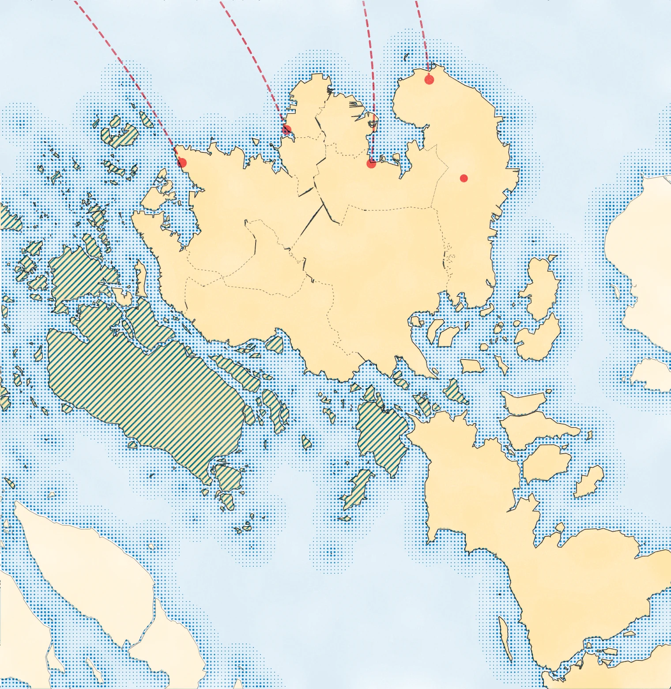
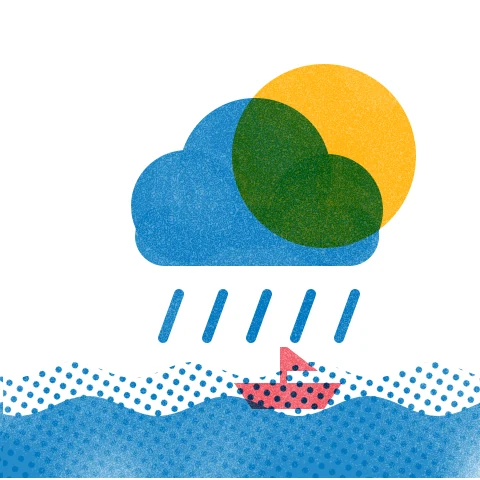
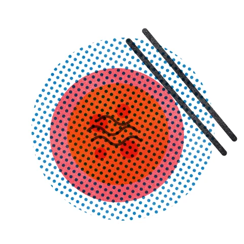
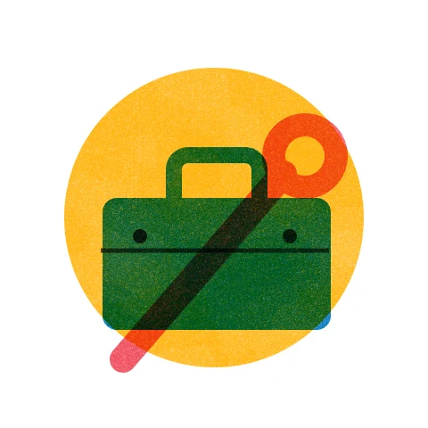
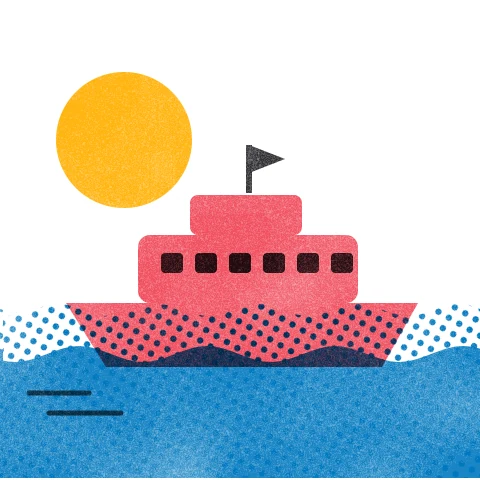
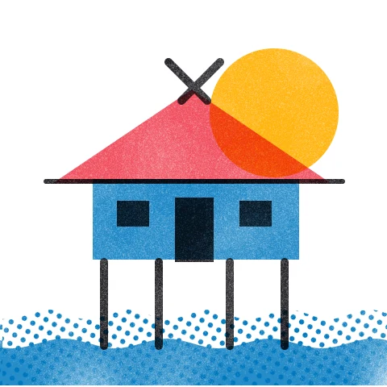
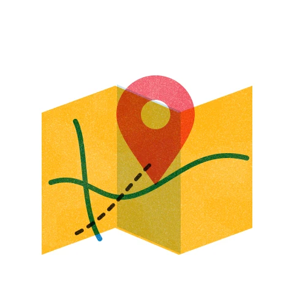
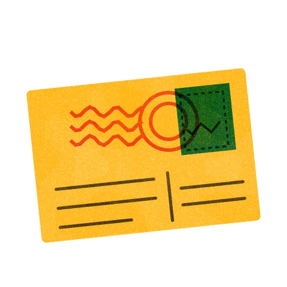
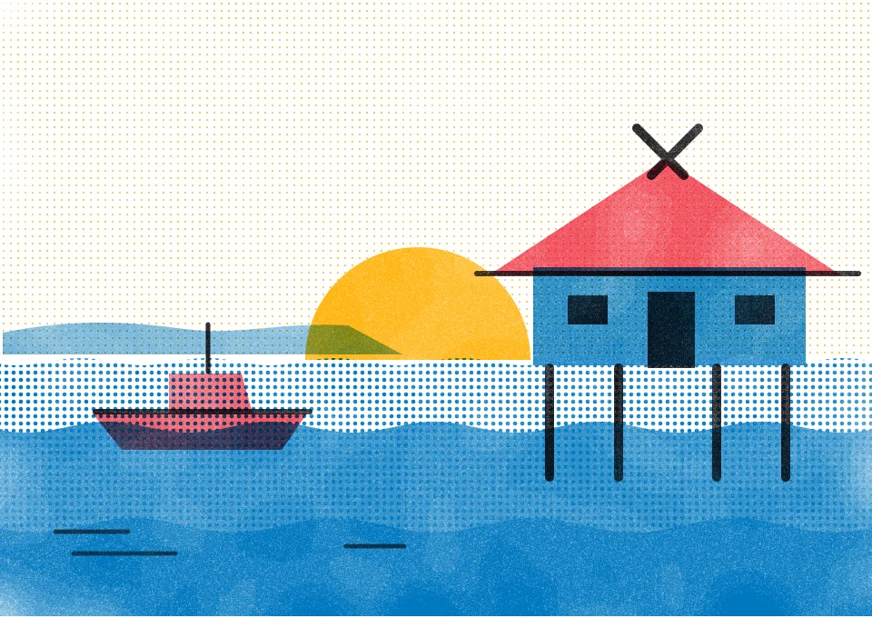

Hari Ini di Batam · Pukul 09.40 WIB
Hujan ringan di Bulang dan Belakang Padang. Gelombang rendah.
Gelombang di perairan Batam setinggi 0,5 meter dan angin bertiup 4 km/jam dari barat laut. Feri terakhir ke Singapura berangkat pukul 20.30 WIB.

Bulang · pukul 09.40 WIB
Belakang Padang
terakhir pukul 20.30 WIB
Peta
Cari tempat di Batam
Pilih jenis tempat yang ingin ditampilkan. Setiap jenis punya ikon sendiri. Saat ini 216 tempat sudah punya titik lokasi; sisanya sedang dilengkapi.
Loket
Tujuh loket informasi kota
Setiap loket mengumpulkan satu jenis informasi. Mulai dari yang paling sering dicari: cuaca, laut, dan tempat makan.

01Cuaca dan LautRadar hujan, tinggi gelombang, dan kamera lalu lintas.
02MakanTempat makan pilihan, dari kopitiam sampai gonggong.
03Tukang LanggananJasa yang direkomendasikan warga.
04TransportasiTrans Batam, feri, dan pompong.
05Cerita dan BudayaSejarah, kampung tua, tokoh, dan kamus.
06Informasi WargaDirektori, nomor darurat, dan panduan.
07Ruang MainKartu pos dan kalkulator belanja.
Cerita dan Budaya · Kampung Tua
Nongsa dan mandat 18 Desember 1829
Nama Nongsa berasal dari Nong Isa, nama timang Raja Isa bin Raja Ali. Pada 18 Desember 1829 ia menerima mandat untuk memegang perintah atas Nongsa dan rantau sekitarnya. Tanggal itu kini diperingati sebagai Hari Jadi Kota Batam.
Di kampung tua ini masih ada kompleks makam zuriat Raja Isa. Letak makam Nong Isa sendiri belum diketahui.
Baca cerita Kampung Tua Nongsa →